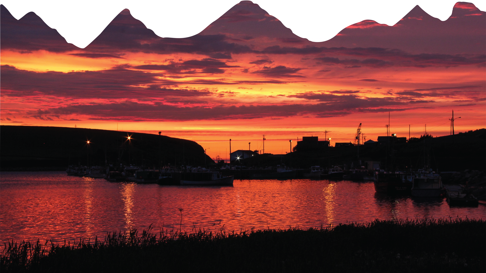
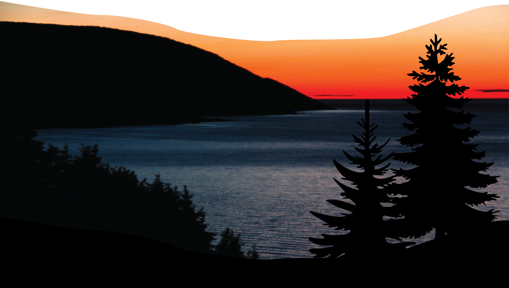
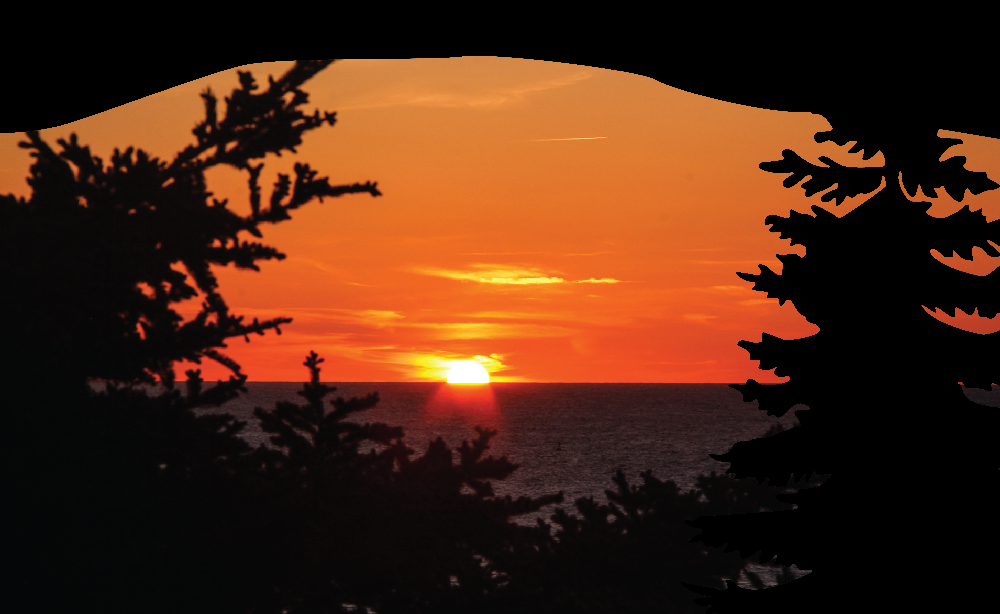

My Journey
I like to travel and always like to bring my camera with me. Getting out in the outdoors and nature is one of my favourite things to do. I have many photos gathered throughout my travels, so the theme is based on those photographs to create an outdoor atmosphere. The design is a combination of animations and sunset photos I have gathered from Cape Breton. Using animated mountains and trees mixed in with the photographs helps to add depth. The colours range from yellow and orange to pinks; your typically sunset shades.